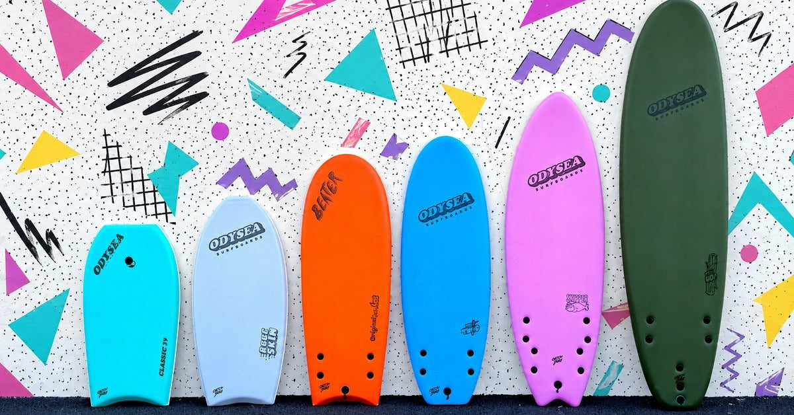
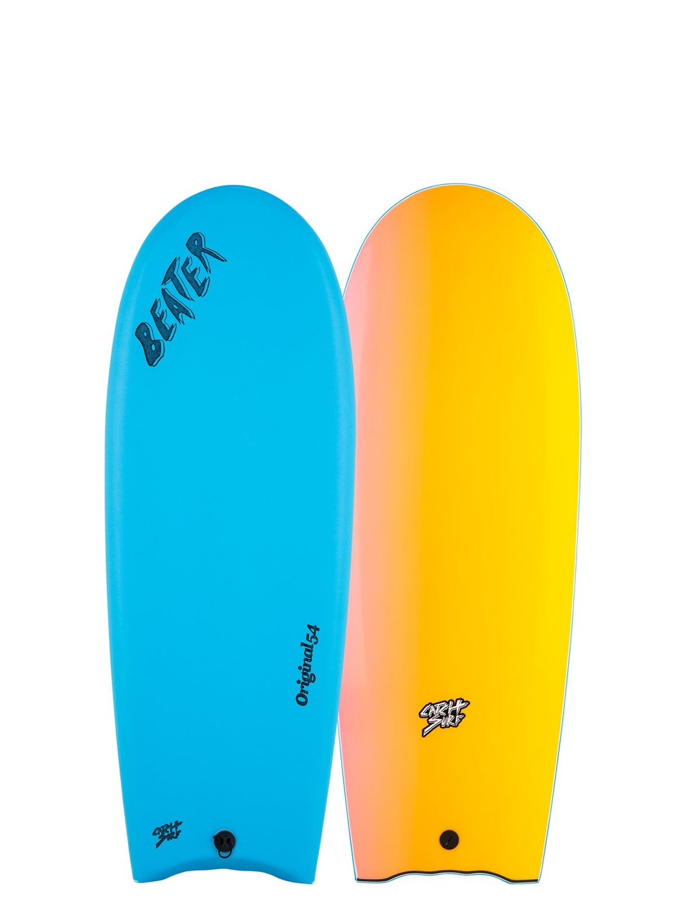
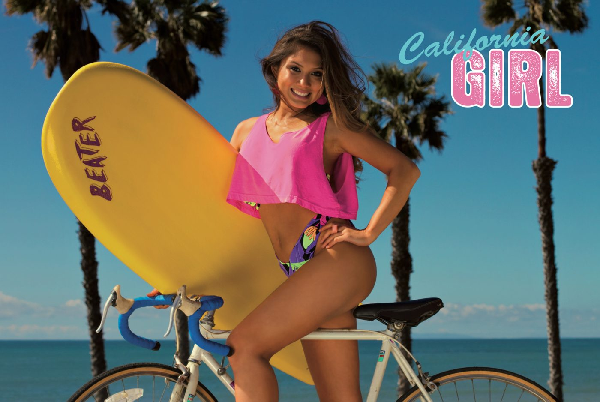
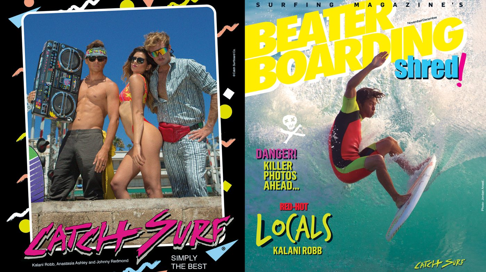
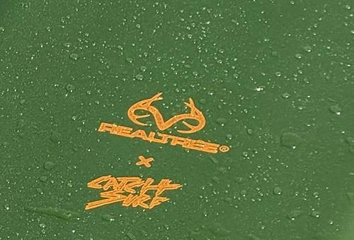
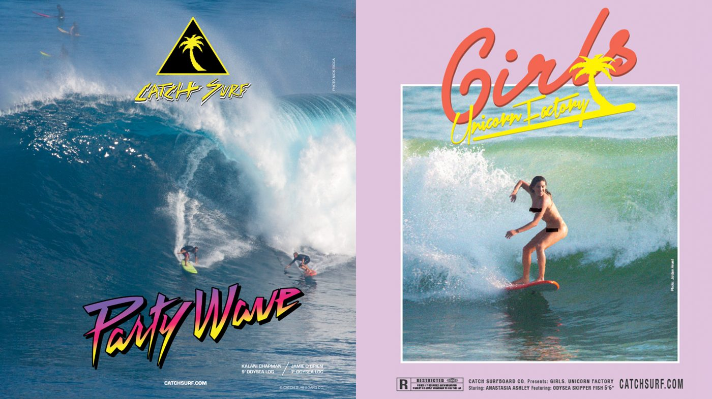
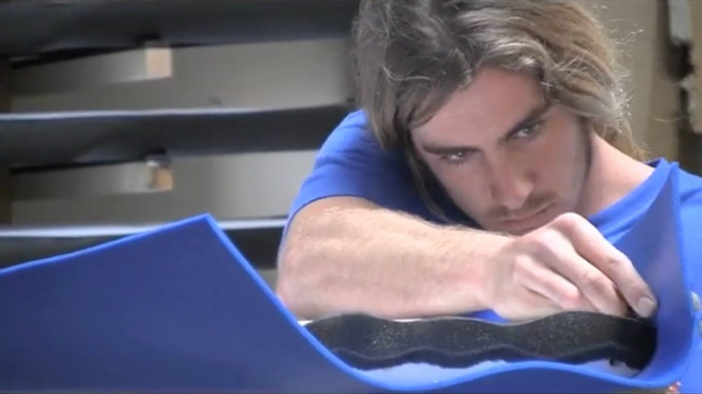

Company study · 2026-11-16
Catch Surf
Visual study (mood board) of Catch Surf, a Laguna Beach soft-top surfboard brand: design and style from its website and campaign images.
Mood
Loud, toy-like and proud of it. Matte foam boards in flat primaries and sunset gradients, 80s zigzag and triangle patterns, neon brush lettering, retro print ads and shorebreak action. Positioning: soft-top surfing made for fun, with real performance behind the party.


(01)

(02)

(03)

(04)

(05)

(06)

(07)Palette, measured from the images
#FCC00A#09BEE9#187FC1#A355A9#4F7041#151313Visual themes
01 80s neon pop. Key motifs: zigzag, triangle and squiggle patterns in pink, yellow and aqua, neon brush lettering, leopard print. Sub motifs: palm trees, sunset sky, retro ad layouts.
02 Foam as toy. Key motifs: flat saturated boards, gradient bottoms, footbags and flying discs in the same colors, rounded rails and noses. Sub motifs: the board line-up in a row, matching leashes and stickers.
03 Shorebreak action. Key motifs: barrels, spray, airs and rail turns on pro riders, turquoise water. Sub motifs: team group on the beach, tour banners.
04 Archive and factory. Key motifs: print ads from the archive ('A Blast From the Past'), a hand on a sheet of foam, shaping room.
Hero material
Catch Surf says its boards use a proprietary construction method that gives the foam tension and flex, an OG Deck 2.0 with an old-school polyethylene look, maple-ply stringers and a dual-composite core (https://catchsurf.com/pages/catch-surf-difference, retrieved 2026-11-16). The brand calls itself the maker of the first high-performance soft surfboards, founded in Laguna Beach in 2007 (https://catchsurf.com/pages/about, retrieved 2026-11-16).
The look is a matte, slightly stippled foam skin in one flat saturated color, with a glossy-looking gradient bottom and a wet-lit sheen in the water shots. Close-up at (05).
Visual elements
Photography. Bright daylight action photos with deep blue-green water, studio flats on pure white for boards, retro print-ad collages, and low-angle beach group shots.
Type and graphics. Hand-drawn brush logo lettering ('Catch Surf' wordmark, 'Beater') in yellow, pink and black; condensed Oswald and Inter in the site CSS; 80s memphis shapes on banners.
Layout habits. Wide banners, tiled collection grids of board flats, poster-style spreads with large type over a photo, a short numbered list of differences.
Detail. Matte foam texture, gradient bottoms, brush-lettered logos in a contrast color, camo or leopard pad graphics, black plug and leash cup.
Interface colors (site CSS, separate from product colors). The interface is plain so the products carry the color.
Visual story
a board line-up banner, a shorebreak action photo, footbags and flying discs, apparel and collaboration tiles (Lost, Realtree), the board finder, then collections. About tells the 2007 Laguna Beach story and a print-ad archive; the Difference page lists the construction points. color and attitude first, performance second, construction last. Relation to the themes: the counter case to both T9 and T10: bright, flat and new where T9 wants wear and T10 wants quiet tactile cloth. It shares only a made-by-hand, material-led thread: the foam deck and the factory shot.
Notable products
Beater Original 54. Carries the flat primary on top and sunset gradient below.
Beater x Realtree. Shows a camo pad with orange stripes beside an olive board.
Womper handplanes and footbags. Extend the toy-like color idea to small objects.
Method and limits
Palette basis. eight Catch Surf images: the board lineup, the Original 54 flat, the California Girl layout, the Beater ad, the Party Wave and Girls ads, a poster set, a footbag photo and the olive Beater photograph (board images (01), (02), (03), (04), (06) and the source of (05), plus two not on the board); k-means in Lab with 30 clusters, the 14 largest kept, and six distinct hues chosen from the measured list. White clusters (page and studio ground) are left out. The pink in the interface CSS was not found as a large cluster in the images
Limits. Pages read on 2026-11-16 (11, all by plain HTTP fetch, no login): https://catchsurf.com/ (home); /pages/about; /pages/catch-surf-difference; /collections/odysea; /collections/beater; /collections/womper-handplanes; /collections/heritage-collection; /pages/get-wet-tour; /blogs/catch-surf-blog; /pages/team-riders; and the product page /products/beater-original-54-finless. The About and Catch Surf Difference text was read in full; the other pages were read for titles and imagery only, because the plain fetch returned product tiles as small thumbnails and no product text was read (no construction specs, prices or sizes). Product-line color analysis was not done: board colors in the images are brand imagery, not a color list of the range. Candidates for a later deeper look only (not started): the foam deck and 'Secret Sauce' construction. A material specialist and reverse engineering are candidates only.
Image credits
- (01) Row of upright foam boards in aqua, white, orange, blue, violet and green on an 80s geometric pattern. source (social preview image Catch-Surf_2026-Boards_80s, 1200 x 628 px, set on every page)
- (02) Beater Original 54 deck in cyan and bottom in a pink-to-yellow gradient, flat on white. source (image BO54_BL26_Pcopy, 1517 x 2048 px)
- (03) Woman with a yellow Beater board by a fixed-gear bike, palms and sea, 'California Girl' layout. source (image Catch-Surf-California-Girl-Beater, 2720 x 1822 px)
- (04) Archive print ad in black, yellow and pink: framed photo of a group, a surfer, 'Beater Boarding shred' headline. source (image SIMPLY_THE_BEST, 2048 x 1150 px, section 'A Blast From the Past')
- (05) Close-up of a matte olive foam deck with printed orange Realtree and Catch Surf logos, wet, true color (crop of a 1517 x 2048 px image). source (home page, image Catch_Surf_RealTree_2026)
- (06) Two retro ads side by side: 'Party Wave' on teal and 'Girls' on pink, neon brush lettering over surf photos. source (image PARTYWAVE_1, 2048 x 1150 px)
- (07) Man pressing his hand on a sheet of bright blue foam in the factory. source (image CS-Factory-Macca-Beater, 3354 x 1886 px)
Images are the brand's own, shown for study only; each is listed above with its source page.